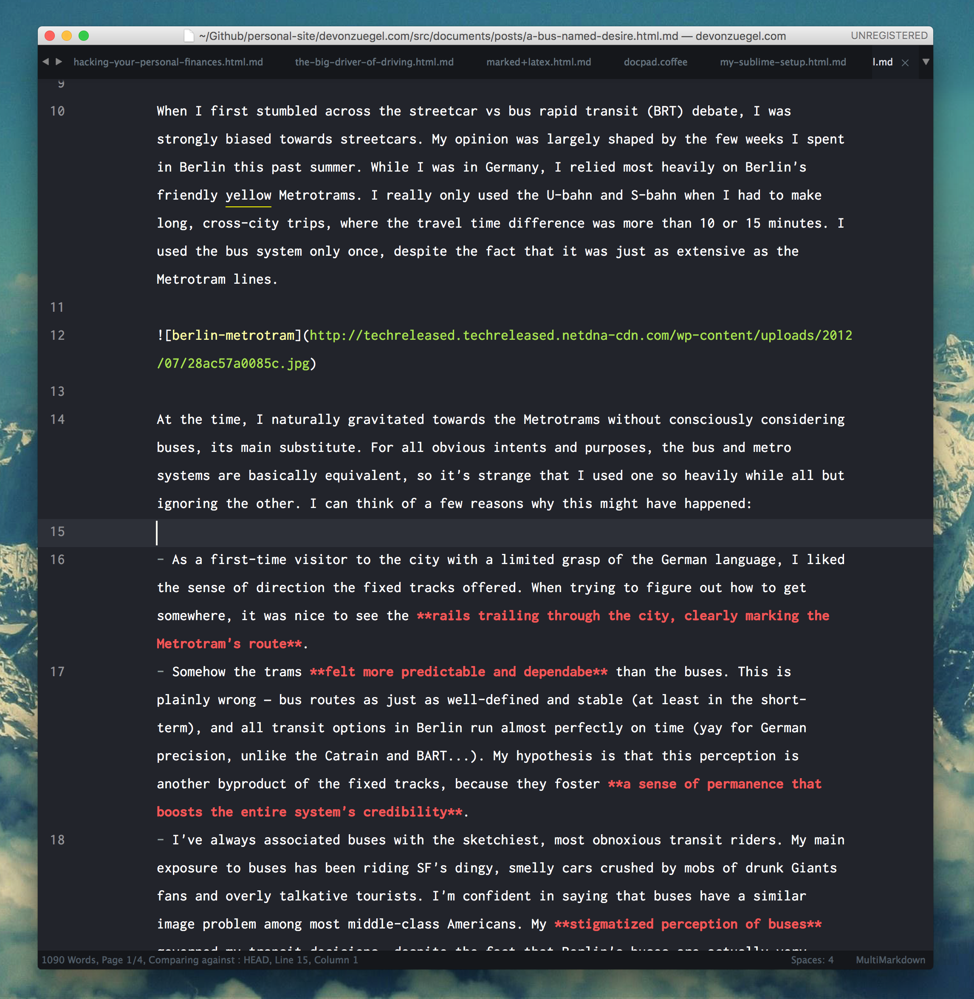

My Text Editor is Absolutely Sublime
by Devon ZuegelI am a huge fan of Sublime Text. It is beautiful and easy to use fresh out of the box, and it does everything I need it to do. However, my favorite thing about Sublime is that it is extremely extensible. I have (perhaps too obsessively) customized my editor to the point that many people don't recognize it. Because I've been able to mold it behavior to fit my needs, I find that I'm much more productive on it than with any other editor, including others' Sublime instances.
I love sharing little tips and tricks I've incorporated into my workflow, so I'm excited to write up this post surveying the key customizations I've made. I hope you enjoy reading it as much as I've enjoyed writing it.
Better yet, I love learning new ways to better use Sublime! If there's anything here that I've missed, please don't hesitate to email or tweet at me with your additions.
I update this post sporadically as I learn new things about Sublime. Last time I updated it was 30 June 2016.Useful packages
You can download a .zip containing all of the packages mentioned below here.
Alignment
The easiest way to single-handedly make a block of code more readable is to align its contents, whether it's the values of a hash or the equals signs initializing a handful of variables at the beginning of a method. However, it's a pain the butt (and frankly not worth the time) to manually go through line-by-line adding the right spacing. With the Sublime alignment package, you can simply select the parts of the lines you want to be aligned and hold down cmd + ctrl + a to achieve the same result. (In the short recorded example to the right, I held down the opt button while dragging my mouse along the beginning of each line to select the relevant lines even faster.)
Thanks to John Backus for sharing this package with me.
All Autocomplete
Extends Sublime's autocompletion to find matches in all open files.
AutoSpell
Auto-replaces obvious spelling mistakes in .md and .txt files.
Bracket Highlighter
Highlights or underlines the innermost brackets of the code you're currently editing. You can see it in action in the alignment video above.
FileDiffs
Enables you to run quick diffs between any combination of open tabs, your clipboard, and files from the current project.
Fold Comments
Quickly fold all comments in the current document.
GitGutter
Small, unobtrusive symbols to the left gutter of Sublime indicate the lines' git status (if you are in a git repository).
Origami
Allows you to split Sublime into panes however you like with simple keyboard shortcuts. You can find my custom key bindings below, which include extensions to Origami's default shortcuts.
Package Resource Viewer
Enables quick viewing and editing of all your packages. It's a bit shocking that this doesn't come with Sublime by default; without this, you have to manually go through the bowels of your file system to find any .tmLanguage, .sublime-package, etc. files that you wanted to edit. In contrast, this plugin gives you fuzzy search over all of these packages directly from Sublime. In short –– it's great!
Ruby Markers
Executes Ruby code and updates # => markers with the results. This one is particularly useful for demoing features of the language or testing the output of little scripts as you write them. If you've ever seen Ruby Tapas (and if you haven't, you should!!!!), Avdi uses xmpfilter and rcodetools with Emacs to get this same behavior for his mini tutorials.
Note that you may have to change the package settings from "ruby_manager": "auto" to "ruby_manager": "rvm" in order to get this to work.
Thanks to John Backus for sharing this package with me.
Schemr & Themr
These two packages enable you to quickly cycle through color schemes and themes (respectively) from any file rather than having to open your preferences file, manually update their file paths, switch back to your original open file to see the changes, and repeat each time you want to test out a new style. These packages aren't so critical for long-term use (I haven't changed my theme in months, and I don't plan on doing so in the near future), but they are really nice when you are first setting up your coding environment.
Useful key bindings
| Shortcut | Result |
|---|---|
select, cmd + g |
Selects all instances of the originally selected text |
select, cmd + d |
Similar to cmd + g, except it adds each following instance one at a time |
cmd + f |
search current document for string (or regex, if the * button to the left is toggled on) |
cmd + shift + f |
expanded find menu; find & replace; advanced search, enabling you to specify what folders / types of files you wish to search |
cmd + shift + i |
Auto indents code (works better for languages like C++ or Ruby, which have block endings defined more than just whitespace) |
ctrl + cmd + up/down arrow |
Move current line(s) up/down |
cmd + shift + d |
Duplicate current line(s) |
cmd + x |
Cut current line(s) |
hold cmd while selecting |
Make multiple selections |
opt + drag cursor |
Make multiple selections (alternate) |
cmd + k + 1 |
Fold 1st layer of code (replace 1 with 2, 3, ... to fold 2nd, 3rd, ... layers) |
My custom key bindings
My theme & color scheme
A Sublime color scheme defines the syntax highlighting and canvas color of your editor, while a theme defines the styling of the sidebars, tabs, and find-and-replace menu.
Pisco Sour color scheme
- You can download my Pisco Sour color scheme here.
- I created this theme with tmTheme Editor. Feel free to use or update my theme however you want.
Spaceblack theme
- You can download the Spaceblack theme here.
Screenshots
Here are a few screenshots of my Sublime setup:
| Multimarkdown | Python |
|---|---|
|  |  |
| Ruby | Haskell |
 |
 |
My User Preferences files
Sublime User Preferences files are where you define your color scheme, theme, and a variety of other customizations like line padding, minimap toggling, and line highlighting. You can find your /User/Preferences.sublime-settings file by pressing cmd + / or by going up to the Sublime Text > Preferences > Settings – User menu. Here is my User Preferences file:
Sublime allows allows you to define language-specific user preferences. This particularly comes in handy for Markdown and plain-text editing, since they are so different from programming-centric uses of Sublime. For instance, I prefer not to have lines wrap around while I'm programming, but I can't live without it while working with real paragraphs rather than concise lines of code that are < 80 characters long. Also, I prefer my code-left-aligned, while I like having broad margins on either side of my text while writing.
To access and edit language-specific preference files, go to Sublime Text > Preferences > Package Settings > Markdown Editing > MultiMarkdown Settings –– User (replacing "Markdown Editing" and "Multimarkdown Settings –– User" with the language with which you're working).